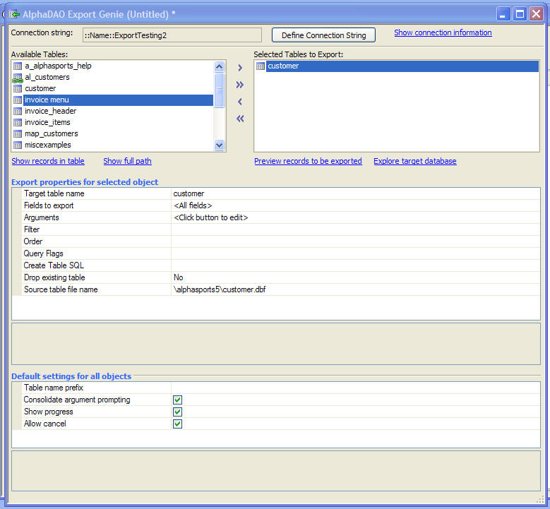
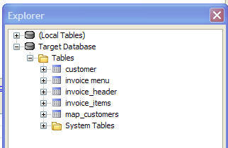
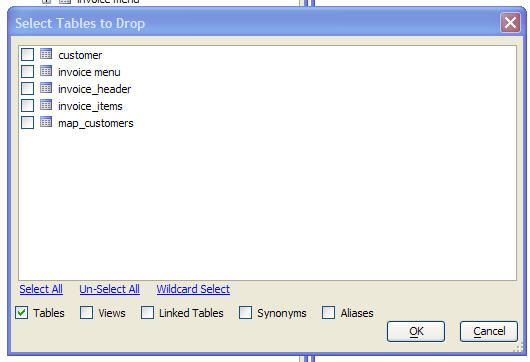
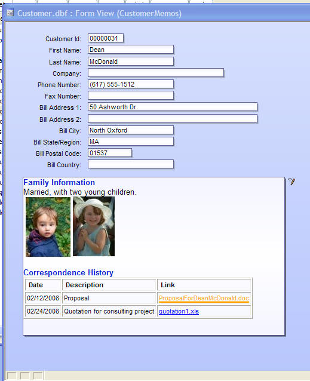

Field Rules
Table Lookups
Table Lookup Field Rules allow you to display the lookup as a pop-up window, or as a drop down. In situations where the drop down option is selected, there have been significant improvements.
Previously, the option to edit records in the lookup list was not supported when the lookup was displayed as a drop down. This option is now enabled. In the screen shot below, an edit icon appears in each row. Clicking on the edit icon will close the drop down and open the associated form to edit the lookup value.
Also, when the option to allow users to enter new records in the lookup table is enabled, a hyperlink appears at the top of the drop down list, as show below. Previously, the entry was at the bottom of the list and users were not likely to see it unless they scrolled the list all the way to the end.
|
Drop-down lookup window - showing appearance when 'Allow change' and 'Allow insert' are enabled. |

Customizing the 'Enter a new record...' Hyperlink
The text for the new record hyperlink can be customized. To set this text, you set the value in a special variable in the addin frame. For example
dim aa as p
aa = addin.variables()
aa.A5Strings.LookupWindow_EnterNewRecordText = "Add a new part number to the list...."
The screen below shows the appearance of the drop down list when the option to edit existing entries and add new entries is turned off.
|
Drop-down lookup window showing appearance when 'allow change' and 'allow enter' are turned off. |

The lookup window can be resized. In the screen shot below, the height of the window has been increased. If the lookup has multiple columns, the columns can be resized and Alpha Anywhere will remember your settings so that the next time you open the lookup, the columns will be correctly sized.
|
Drop-down lookup window showing how the size of the lookup window can be changed. |

Drop down lookups are now actually implemented as Browses. This means that drop down lookups now inherit many of the new features of Browse layouts, such as the ability to display scaled images. In the image below, the lookup window is displaying thumbnail images of each sales person.
|
Drop-down lookup window showing images in the list. |

Watch a video demonstration of this.
Miscellaneous Improvements
Import/Export Connection Strings
It is now easy to move your saved connection strings from one database (i.e. .adb file) to another. The Tools, External Database, Manage Connection Strings now has to new menu items: Export connection strings and Import connection strings that allow you to export your connection strings to a text file and then import them from this text file.
To copy connection strings from one database to another:
- Export the connection strings from the source database.
- Open the target database.
- Import the connection strings, specifying the text file created in step 1.
Note: You can now also create named connection strings using Xbasic. The a5_NamedConnectionCreate() function allows you to create both AlphaDAO and ADO named connections without having to go through the user interface.
SQL Query Genie
There have been several improvements in the SQL Query Genie window.
- The SQL Query Genie can now be displayed as a MDI window
- Several instances of the Query Genie window can be opened simultaneously
- The SQL Query Genie can now be opened directly from the Tools, External Databases menu command when the Control Panel has focus.
- The toolbar has a connection string dropdown that allows you to easily execute a query against different databases.
- The 'Action' button on the toolbar brings up a dialog that allows you to perform an action with the SQL query you have specified.
The following actions are supported when you click the 'Action' button:
- Copy SQL to clipboard
- Import the data from the query as an Alpha Anywhere table
- Create a passive-link table from the data in the query
- Create a new layout (report, label or letter) with the data in the query

Exporting from Alpha Anywhere to SQL Databases
Alpha Anywhere can now export data from local .dbf tables to remote SQL databases.
When you create a new Export operation, and new dialog is displayed:
|
New Export Operation Dialog |

If you select the 'Remote database using AlphaDAO' option then the AlphaDAO Export builder is shown. The first step is to specify the connection string to the remote database to which you want to export tables.
After you have connected to the remote database, the builder looks like this:
 |
AlphaDAO Export Builder |
You can select one or more tables to export. For each table that you select to export you can define the following properties:
- Name of the table to create in the remote database.
- List of fields to export. If you leave this blank all fields are exported. You can specify a list of fields and also expressions. For example, you might want to export 'alltrim(firstname) + " " + lastname' as a single field rather than exporting 'firstname' and 'lastname' as two separate fields.
- Filter expression to select which records to export. The filter expression can include arguments. For example: city = :whatcity. If you use arguments in your filter, you must define the arguments by clicking the smart field in the 'Arguments' property. Alpha Anywhere will prompt for argument values at runtime.
- Order expression to define the order in which the records should be exported.
- Query flags to control how the filter is executed (these are the
standard query flags for the
.query_create() method). - CREATE TABLE statement that should be used to create the remote table into which the exported records will be placed. In most cases you will not set this property - Alpha Anywhere will create a default CREATE TABLE statement. By defining your own CREATE TABLE statement, you can control the data type of each column in the exported table.
- Whether existing tables of the same name in the remote database should be dropped before tables are exported. You can select Yes, No or Prompt.
Exploring the Target Database
The 'Explore Target Database' hyperlink in the builder is useful for allowing you to see what's in the target Database (i.e. the database to which data will be exported). When you click on this hyperlink a Database Explorer window is opened. You can view the data in the target database, and you can also drop tables by either right clicking on an individual table, or on the 'Tables' entry.
 |
Target Database Explorer |
If you right click on 'Tables' and select the 'Drop Tables' menu entry, you get this dialog:
 |
Drop Tables dialog |
More on Arguments
Each table you you export can have a filter expression that references arguments. When you run the Export Operation, Alpha Anywhere will prompt for the argument values for each table. You can check the 'Consolidate argument prompting' checkbox and then Alpha Anywhere will prompt for all of the argument values up front before starting to export records.
If you are using the Xbasic Export.Run() method to run a previously saved AlphaDAO export operation, you can pass in values for arguments and then Alpha Anywhere will not prompt for these argument values.
For example, say you have created an Export Operation called 'myexport' which exports two tables, customers (with a filter expression of 'state = :whatstate'), and orders (with a filter expression of 'orderdate = :whatdate)
Here is how you can run this operation using Xbasic and pass in values for the arguments.
dim args as sql::arguments
args.add("whatstate","MA")
args.add("whatDate",{2/5/2008})
export.run("myExport","","",.t.,.f.,args)
If you were to execute the command without passing in argument values, then Alpha Anywhere would run the operation, but would prompt for values for the 'whatstate' and 'whatdate' argument.
export.run("myExport")
Watch a video demonstration of this feature.
Importing from SQL Databases
When you use the AlphaDAO Import Genie, you can now import data to ascii and XML files. Previously, the only options were to import into a table or passive-link table.
HTML Memo Fields
Alpha Anywhere now supports a new type of memo field, HTML Memos. This is in addition to regular memos and RTF (Rich Text) memos supported by previous version. HTML memos are a huge improvement over RTF memos for situations when you want memos that should contain formatted text. HTML memos support all of the layout and formatting features (such as tables, style sheets (CSS), images, live hyperlinks, embedded video, etc.) that you would expect in an HTML document. This means that you can create exceptionally richly formatted memo fields for your records.
|  |
|
Form with an HTML Memo field. |
Watch video demonstration of HTML Memo Fields.
To define an HTML Memo field, select the 'HTML Memo' field in the 'Type' column of the table editor.
|
Defining an HTML Memo field |

Ambient Font
HTML Memo fields have an 'ambient' font that defines the appearance of text in the memo field that has not been explicitly styled. The 'ambient' font is set by defining the font for the HTML Memo field in the Properties Dialog (just as you define the font for any other object on a Form, Browse or Report layout).
For example, say you have defined the font for an object on the form that is bound to a HTML Memo field to be 'blue, 12pt'. All text in the HTML memo that you have not explicitly styled will be blue and 12 pt. If you then change the object font properties, the HTML memo will be displayed using the new ambient font settings.
Converting Memo Field Types
You can convert an existing Memo or RTF Memo field to an HTML Memo field when you restructure a table. You can also convert HTML Memo fields back to regular Memo and RTF Memo fields, but doing so might result in some loss of information. When you convert a RTF Memo field to an HTML Memo field, Alpha Anywhere will try to get as faithful a representation of the formatted RTF text into HTML, but the process is not perfect.
Printing HTML Memo Fields
HTML Memo fields can be placed on reports just like any other type of memo field, and they will print correctly.
UUID Fields
Alpha Anywhere supports a new UUID field type. A UUID field can only contain valid GUID values. A GUID is a special string that contains a globally unique value. (GUID is an acronym for Globally Unique ID). UUID fields are ideal for use as the primary key for a table. Alpha Anywhere native tables do not require an explicit primary key because records can be identified and retrieved by record number. However, the record number is not reliable because a record's record number will change after records are deleted and the table is packed.
Typically, when specifying a field as UUID field, you will also set a Default Value field rule to enter a default value for new records. To enter a valid GUID value into new records, you would use this as the Default Value expression:
*guid_create()
Using Xbasic to Handle Events on HTML Pages - Xbasic Scripting
Alpha Anywhere now allows you to use HTML in both Xdialog and Form layouts. Normally, when you want to write code to respond to events on an HTML form, or to automate behaviors, you must code using JavaScript. Now, you can also use Xbasic to write your event handlers and automation code in an HTML document. Of course, Xbasic can only be used when the HTML is hosted in an Alpha Anywhere environment (i.e. in an Xdialog or Form layout).
This is an extremely powerful feature that is primarily of interest to users who have strong HTML/CSS skills and who want to take advantage of the powerful layout features that HTML/CSS offer within the Alpha Anywhere environment. With this feature it is possible to create some extremely rich user interfaces.
The following example Xbasic script shows an Xdialog that contains Internet
Explorer. The HTML that is displayed in the dialog has a button with an on
Notice that in the HTML document, there is a
Demo script:
dim htmlContent as c
htmlContent = <<%html%
This is some html content.